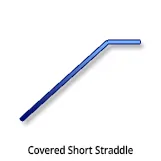
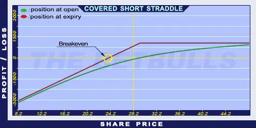

Description and use

Covered Short Straddle option is an income strategy with the biggest risk. The main idea is to increase the return of a Covered Call with a Short Put sold with the same strike price as the Short Call. This way the Short Put generates extra income and risk. This way, the risk is going to be the difference of the Short Put’s strike price and its premium. It is almost always exercised, because the Call and the Put options have the same strike price. When the share price is above the strike price at expiry, the Put option will expire worthless and the Call option will be exercised and the owned shares are going to be delivered. In the opposite case, the Call option will expire worthless and the Put option will be exercised and more shares are going to be purchased at strike price. This situation is expensive when the share prices fall. The direction of the market is increasing. The strategy is a net debit investment. Usually the trading takes place on a monthly basis.
- Type: Bullish
- Transaction type: Debit
- Maximum profit: Limited
- Maximum loss: Limited
- Strategy: Income strategy
Opening the Position
Covered Short Straddle Option Positions
- Buy a share.
- Sell Short Put (strike price < estimated price at expiration).
- Sell Short Call (same expiration and strike price as the Put option’s).
Steps
Entry:
- Make sure the trend is ascending or stagnating at a certain level.
Exit:
- When the share price is above the strike price, the Short Call will be exercised automatically and the investor will deliver the shares. The income is the received premiums.
- When the share price is at or below the strike price, the Short Put will be exercised. Then further shares must be purchased. The investor must pay the strike price for the shares; therefore, it is an expensive transaction.
- If the share price is at the strike price, the investor can make profit, but it is a highly risky strategy.
Basic Characteristics
- Maximum loss: Share price - Premium (Put) + Strike price - Premium (Call).
- Maximum profit: Limited. Received premiums + Strike price - Share price.
- Time decay: Time decay has a positive effect on the value.
- Breakeven point: Strike price - (received premiums / 2) + ((share price - strike price) / 2).
Advantages and Disadvantages
Advantages:
- Income on a monthly basis.
- The potential profit is higher than for a Covered Call strategy.
Disadvantages:
- It is highly risky when share prices are falling.
- Expensive.
- In case of increasing share prices, it has an upper limit.
- It has no limits for losses. Not a recommended strategy for beginners.
Closing the Position
Details on how to close the position based on the share price relative to the strike price, and strategies for mitigating losses.
Example

Covered Short Straddle strategy example
- ABCD is traded for $28.20 on 25.02.2017. Buy a share for $28.20. Then the investor sells a Short Put option which has a strike price of $30, expires in March 2017, and costs $2.60 (premium). Then he sells a Short Call option which has the same strike price and expiration, costing $0.90.
- Net debit: ND = $24.70
- Maximum loss (risk): R = $54.70
- Maximum profit: Pr = $5.30
- Breakeven point: BEP = $27.35